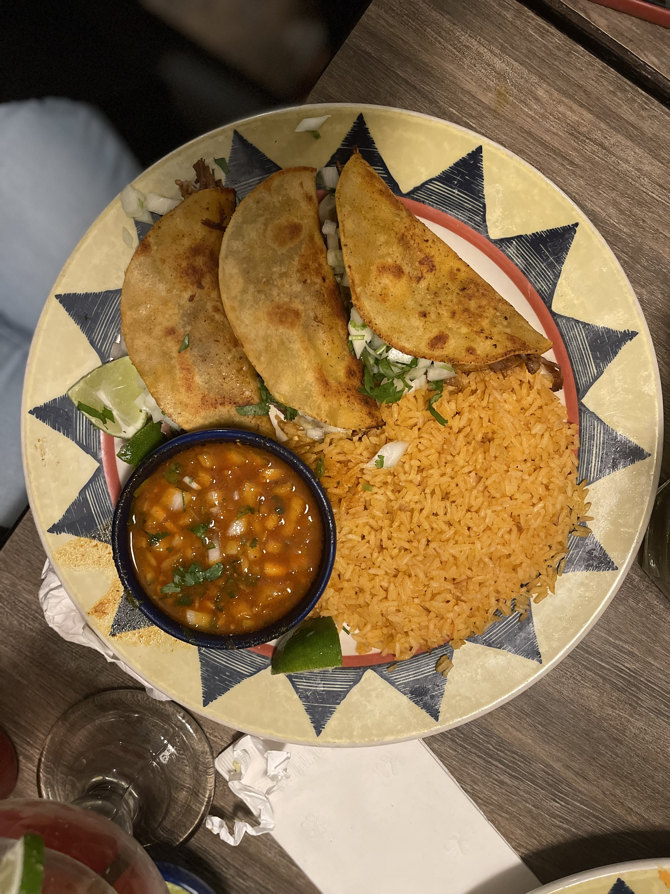
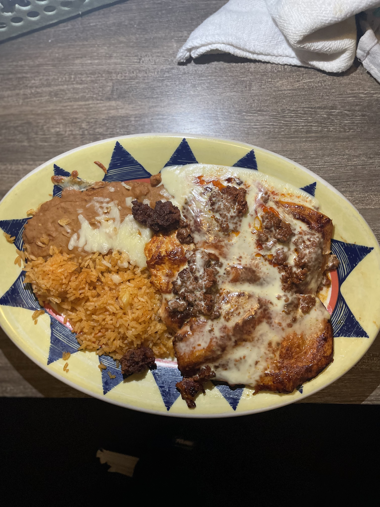

One of the best Steak dish is the "Quesabrillas". The Quesabrillas are the newest addition. There are 3 small quesadillas that are made with corn tortillas. This meal is made with marinated Shredded Beef and with Mexican cheese. These quesadillas are grilled and then served with "consume" which is broth that is like a soup that you can dip thoe quesdillas in it and it makes it so much better. The meal also comes with rice and the quesadillas are topped off with onions and cilatro. I believe this dish is $14.99!
The best Chicken dish is the "Chori Pollo". The Chori Pollo is made with two big chicken breasts thta are grilled and already marinated. The meal is topped off with the Queso Fundido dip that I mentioned earlier. The Chori Pollo is also served with rice and beans. It also come with corn or flour tortillas. This dish is very popular and I used to eat this all the time. If you like food that has a spicy kick to it, this is your best choice. This dish is $17.99!
